Send Apple Card transactions to Notion
WalletFeed sends your Apple Card, Apple Cash and Savings transactions from your iPhone to a database in Notion. You make a connection in Notion and give it access to a page, and then WalletFeed makes the database on that page.
Before you start
You must have these items:
- An iPhone with iOS 26 or a newer version. WalletFeed is available only in the US.
- Apple Card, Apple Cash or Savings in Wallet on that iPhone.
- WalletFeed, with WalletFeed Pro. WalletFeed Pro is a subscription with a 1-week free trial, or a one-time Lifetime purchase.
- A Notion account. You must be a Workspace Owner in the workspace that receives your transactions, because only a Workspace Owner can make a connection.
- A computer with a web browser for step 1 and step 2.
Your token stays on your iPhone
- WalletFeed keeps the token in the Keychain on your iPhone. iOS encrypts the Keychain.
- The token does not go to iCloud Keychain or to your other devices.
- WalletFeed has no account and no servers. No person at WalletFeed can see or get the token.
- Your iPhone sends the token only to Notion, in each request to Notion.
- When you delete the destination, WalletFeed deletes the token from your iPhone. You can also delete the connection in Notion.
Step 1: Make a connection in Notion
On the Configuration tab of the connection, Notion shows the text "Keep it secret, since anyone with the token can act on behalf of the connection." For information about the token in WalletFeed, refer to Your token stays on your iPhone.
- With the token, WalletFeed can open only the pages that the connection has access to. In step 2, you give the connection access to one page and its child pages.
- WalletFeed makes its database on the page from step 2. WalletFeed changes only the rows that it sends.
- You can delete the connection in Notion (refer to Delete the connection in Notion). After you delete the connection, Notion does not accept its token.
To make the connection, do these steps:
-
On your computer, open Notion's Developer tools.
-
If Notion shows Log in to your Notion account, get access to your Notion account.
Result: Notion shows Developer tools on the Connections tab.
-
Click + New connection.
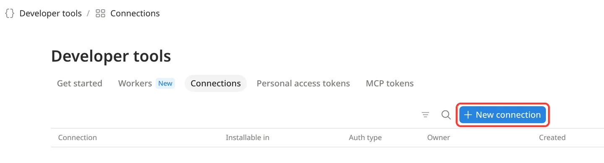
-
In Connection name, type a name for the connection, for example
WalletFeed. -
In Authentication method, select API token.
If you select OAuth, Notion does not show an API token on the Configuration tab. WalletFeed uses the API token.
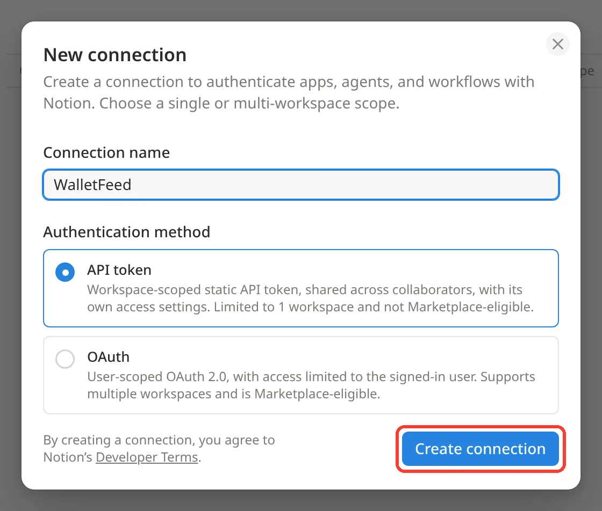
-
Click Create connection.
Result: Notion opens the connection on the Configuration tab. In Integration token, the tab shows the API token. You will copy the token on your iPhone in step 3.
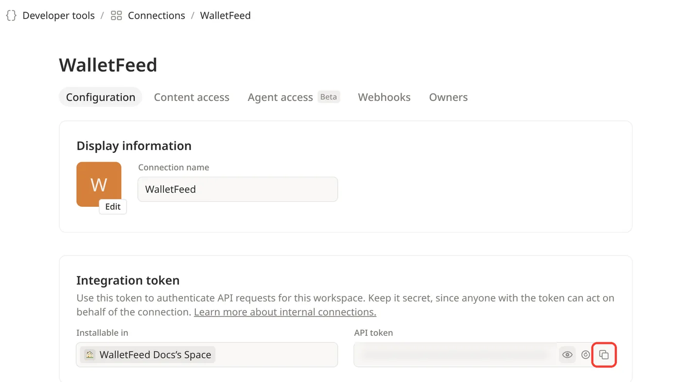
-
Scroll to Capabilities.
-
Make sure that Read content, Update content and Insert content have a checkmark.
Notion selects these three content capabilities for a new connection. WalletFeed uses the three capabilities.
-
In User capabilities, select No user information.
Notion selects Read user information including email addresses for a new connection. WalletFeed does not use user information or comments. The tab has no Save button, because Notion saves each change when you make it.
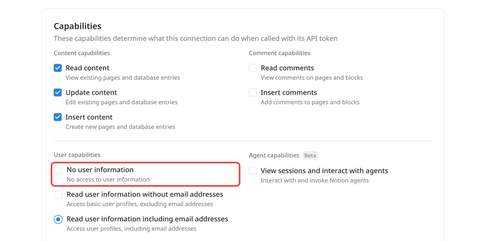
Step 2: Give the connection access to a page
A new connection cannot open pages in Notion. WalletFeed makes its database on a page that the connection can open.
-
In Notion, click New page (the pencil icon at the top of the sidebar).
-
Click Page.
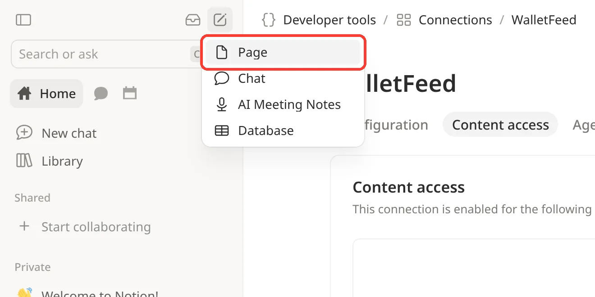
-
Type a title for the page, for example
Budget. -
Move the pointer to the top of the page.
While you type, Notion does not show the buttons at the top right of the page.
-
Click ••• at the top right of the page.
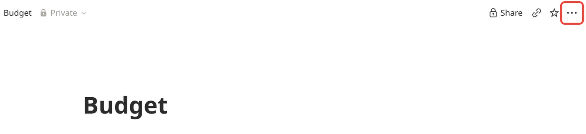
-
Click More at the bottom of the menu.
The menu does not show Connections. Connections is in More.
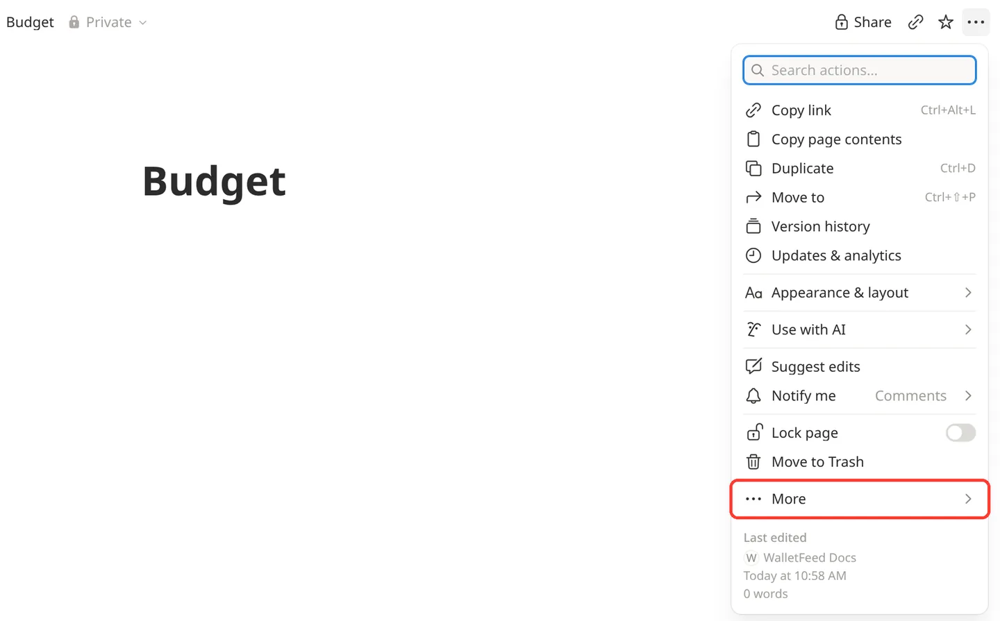
-
Click Connections.
Result: Notion shows Search for connections… and a list of other apps.
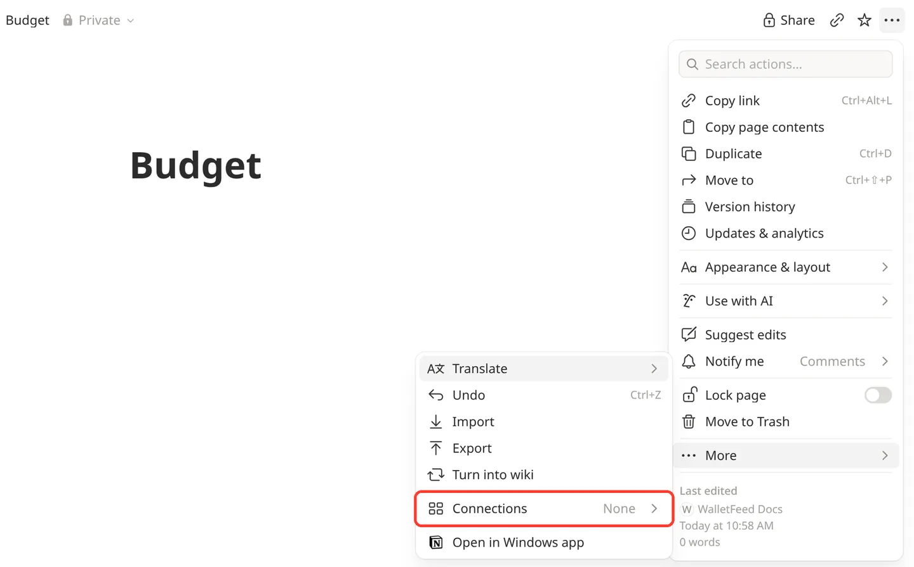
-
In Search for connections…, type the name of your connection.
Notion shows your connection only after you type its name. The apps below Add a new connection, for example Bardeen, are not your connection.
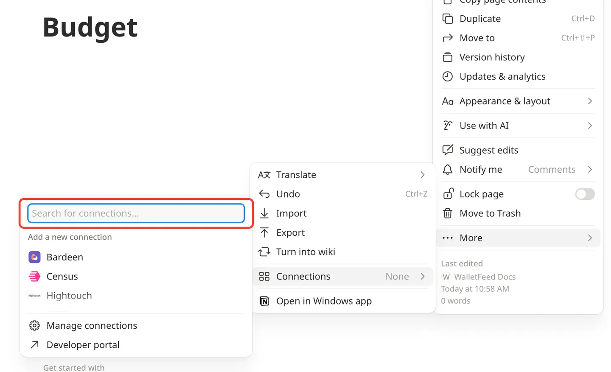
-
Click your connection.
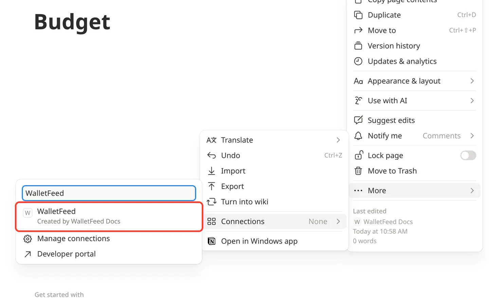
Result: Notion shows a message with the name of your connection, for example Add WalletFeed to this page. The message shows the capabilities that the connection gets on this page and its child pages.
-
Click Add to page.
Result: The connection gets access to the page. In the More menu, Connections shows 1.
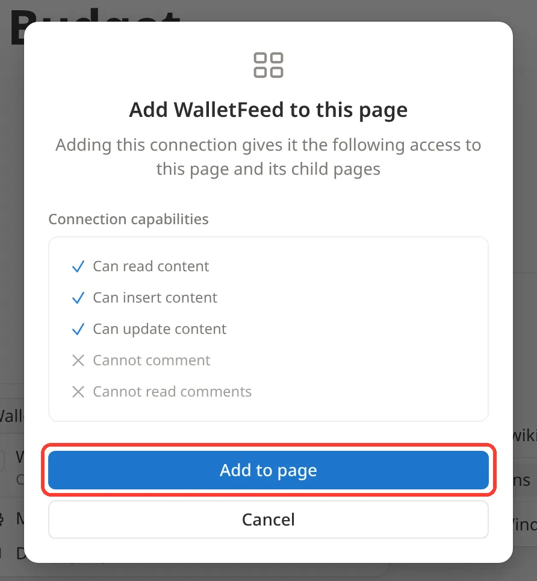
You can also give the connection access to the page in Developer tools:
-
On your computer, open Notion's Developer tools.
-
Click the name of your connection.
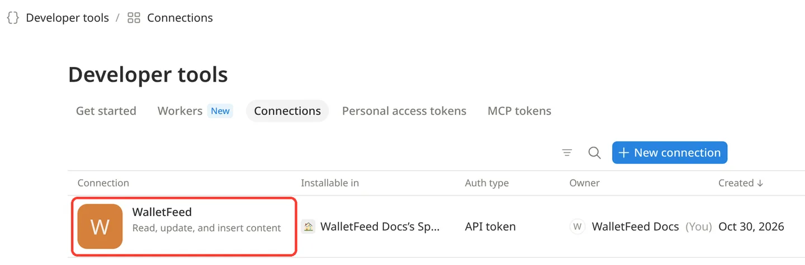
-
Click the Content access tab.
-
Click Edit access.
Result: Notion shows Manage page access.
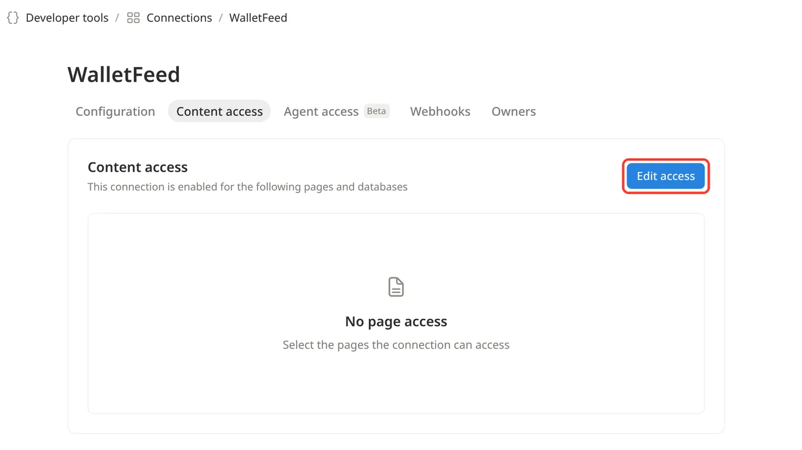
-
Click Private, or the teamspace that has the page.
-
Select the page that you made.
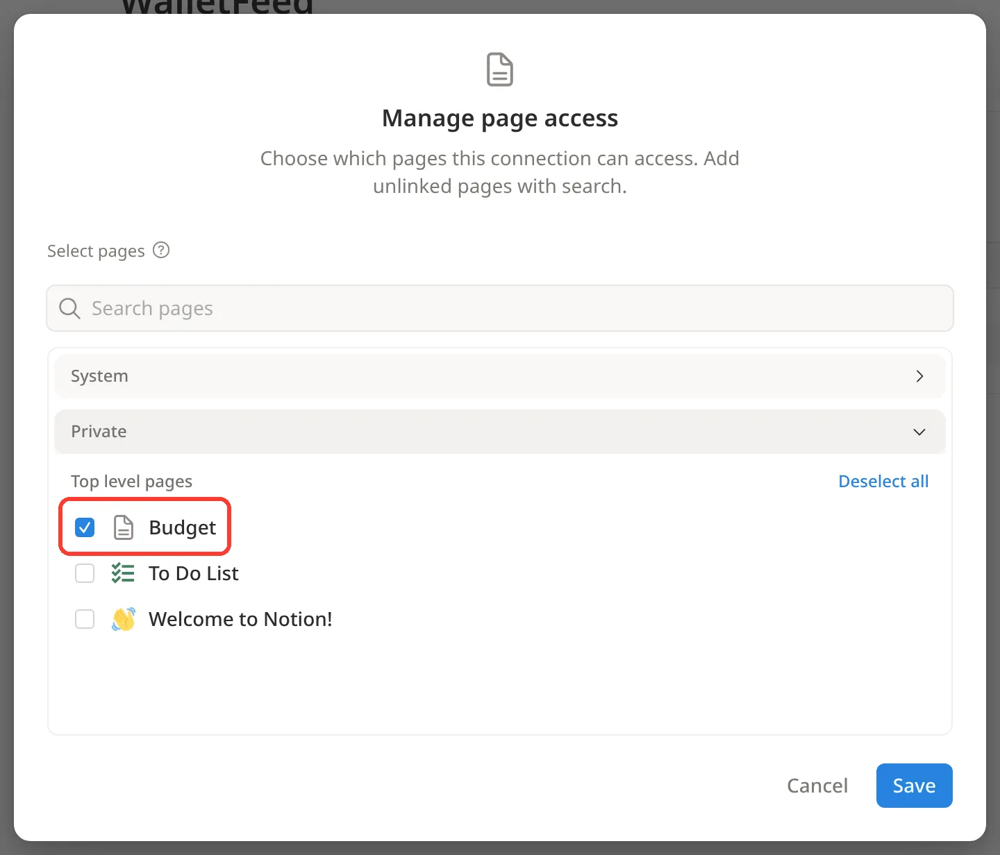
-
Click Save.
Result: The Content access tab shows the page.
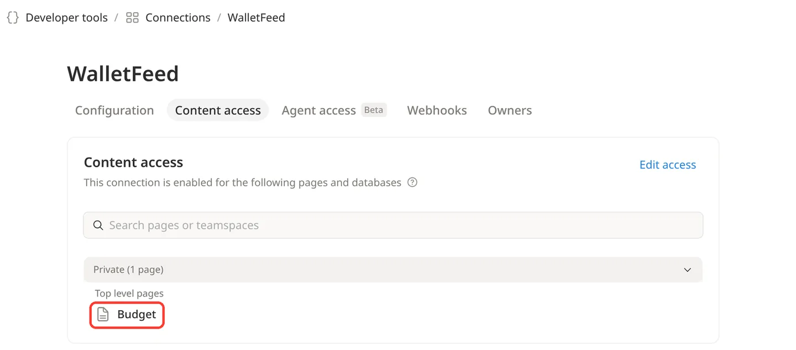
Step 3: Paste the token in WalletFeed
-
On your iPhone, open WalletFeed.
-
Tap Destinations.
-
Tap + at the top of the screen.

-
In Sheets & Databases, tap Notion.

If you do not have WalletFeed Pro, WalletFeed shows the WalletFeed Pro screen. After you get WalletFeed Pro, WalletFeed shows the Notion screen.
-
Tap Developer Portal.
Result: Your web browser opens Developer tools in Notion, on the Connections tab.
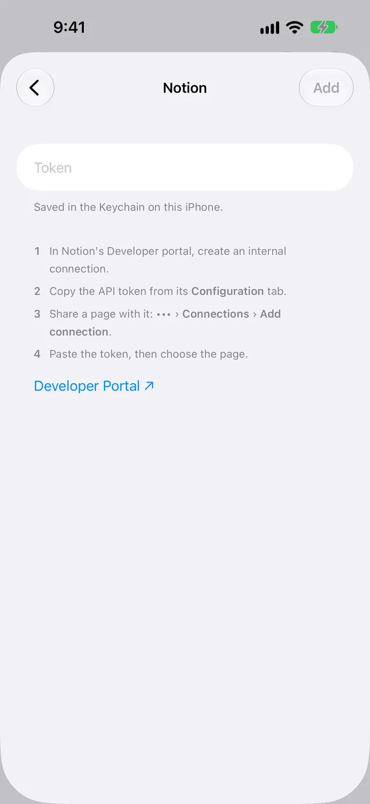
-
If Notion shows Log in to your Notion account, get access to your Notion account.
-
Tap the name of your connection.
On an iPhone, the table of connections is wider than the screen. The name of the connection is at the left.
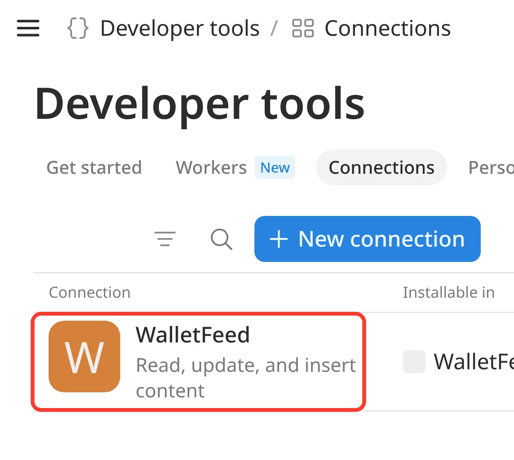
Result: Notion opens the connection on the Configuration tab.
-
In API token, tap Copy.
Copy is the third icon to the right of the token.
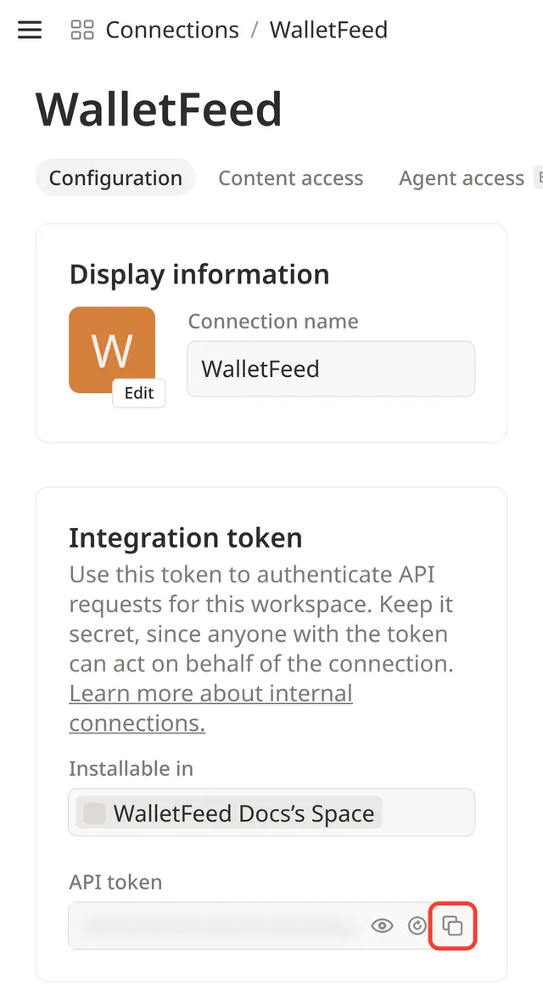
-
Open WalletFeed again.
-
Paste the token in Token.
Result: WalletFeed shows Database and Page below Token.
WalletFeed keeps the token in the Keychain on your iPhone.
Step 4: Select the page and add Notion
-
Make sure that Database shows New.
-
In Page, select the page from step 2. WalletFeed shows "Adds a WalletFeed Transactions database to the page."
-
Tap Add. WalletFeed makes the WalletFeed Transactions database on the page.
-
On the message Send Transactions to Notion?, tap Send.
The message tells you the data that Notion will receive, the Wallet accounts and the start date. If you tap Cancel, WalletFeed removes the destination and sends nothing. The empty database stays on the page.
WalletFeed starts to send your transactions to the WalletFeed Transactions database. In Destinations, the name of the new destination has "Notion ·" before the name of your Notion workspace.
Properties in the database
WalletFeed makes the WalletFeed Transactions database with these properties. Each row is one transaction. The table gives the properties in the same sequence as the database in Notion.
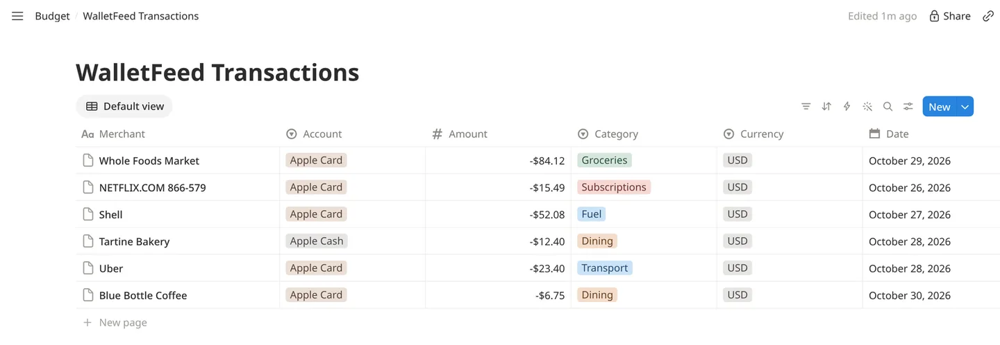
| Property | Type | Value |
|---|---|---|
| Merchant | Title | The merchant name. If Wallet has no merchant name, WalletFeed uses the description. |
| Account | Select | The name of the Wallet account, for example Apple Card. |
| Amount | Number, in dollars | Less than zero for money out (for example, a purchase). More than zero for money in (for example, a payment or a refund). |
| Category | Select | The WalletFeed category, for example Groceries or Travel. |
| Currency | Select | The currency code, for example USD. |
| Date | Date | The day of the transaction, in the time zone of your iPhone. |
| Description | Text | The description of the transaction in Wallet. |
| Foreign Amount | Number | The amount in the merchant's currency. It is less than zero when Amount is less than zero. It is empty for a purchase in dollars. |
| Foreign Currency | Select | The code of the merchant's currency. It is empty for a purchase in dollars. |
| MCC | Number | The merchant category code. This number identifies the type of merchant. |
| Pending | Checkbox | WalletFeed selects this checkbox while the charge is pending. |
| Status | Select | The status of the transaction in Wallet, for example pending or booked. |
| Type | Select | The transaction type in Wallet. |
| WalletFeed ID | Text | The ID that WalletFeed uses to find the row again. |
WalletFeed writes only to these properties. You can add other properties to the database, and WalletFeed does not change them. WalletFeed finds each property by its name and each row by its WalletFeed ID. Thus, the names of these properties and the WalletFeed ID values must stay the same.
Your transactions go from your iPhone directly to Notion. WalletFeed has no account and no WalletFeed servers. After Notion receives your transactions, the terms of Notion are applicable to them.
New and changed transactions
While WalletFeed is open, Notion receives changes in seconds. When WalletFeed is not open, iOS starts WalletFeed approximately 1 hour or less after a change in Wallet. If Background Sync is on in Settings › Sync, WalletFeed then sends the change.
WalletFeed sends a pending charge to Notion and selects Pending. When Wallet changes the status of the charge to booked, WalletFeed updates Status and Pending in the same row. A refund is a new row with an Amount of more than zero.
If Wallet changes the status of a pending charge to rejected, WalletFeed moves its row to the trash in Notion. WalletFeed also moves a row to the trash when Wallet removes the transaction. In Notion, you can move a row from the trash to the database again.
Notion has a limit on requests. Thus, WalletFeed sends not more than 3 requests each second. As a result, WalletFeed can be slow to send a long history.
Send previous transactions
A new destination also receives previous transactions from the start date in Settings › Sync › Initial History. Initial History is All until you change it. To change Initial History, do these steps before you add Notion:
-
In WalletFeed, tap Settings (the gear button) at the top of the screen.
-
In Sync, tap Initial History.
-
Select Today, 30 Days, 90 Days, 1 Year or All.

To send more previous transactions to your Notion destination, use Send History:
-
In Destinations, tap the Notion destination.
-
Tap Send History.
-
Select 30 Days, 90 Days, 1 Year or All.

If the database has a row for a transaction, WalletFeed does not add a second row. WalletFeed finds that row by its WalletFeed ID and updates it.
While WalletFeed sends the history, the destination screen shows Sending History and a progress bar. If you tap Send History › Stop Sending, WalletFeed stops before it sends all of the history. When WalletFeed completes the history, History shows All sent, or Sent from and the start date.
Change or remove the destination
To change the destination, tap the Notion destination in Destinations. On the destination screen, you can do these tasks:
| Task | On the destination screen |
|---|---|
| Stop for a time | Set Enabled to off. To start again, set Enabled to on. |
| Send only some transactions | Set Filter to on. Then set Include, Minimum, Include Pending, Accounts, Categories or Exclude. |
| Use a new token | Tap Replace Token. Paste the new token. Tap Replace. WalletFeed makes sure that it can read the database with the new token. |
| Make sure that WalletFeed can write to the database | Tap Send Test. WalletFeed adds a test row with the merchant "WalletFeed" and the account "Sample Card". |
| Remove the destination | Tap Delete. Tap Delete again. The rows that WalletFeed sent stay in Notion. |
If Apple Intelligence is active on your iPhone, you can also type a filter rule in words:
- Set Filter to on.
- In the field below Filter, type a rule, for example "Travel over $50, not Uber".
- Tap the Apple Intelligence icon at the end of the field.
If you remove the destination, the connection in Notion stays. The connection can open the page until you disconnect it from the page or delete it.
Disconnect the connection from the page
-
On your computer, open the page in Notion.
-
Click ••• at the top right of the page.
-
Click More.
-
Click Connections.
-
In Active connections, click the arrow to the right of your connection.
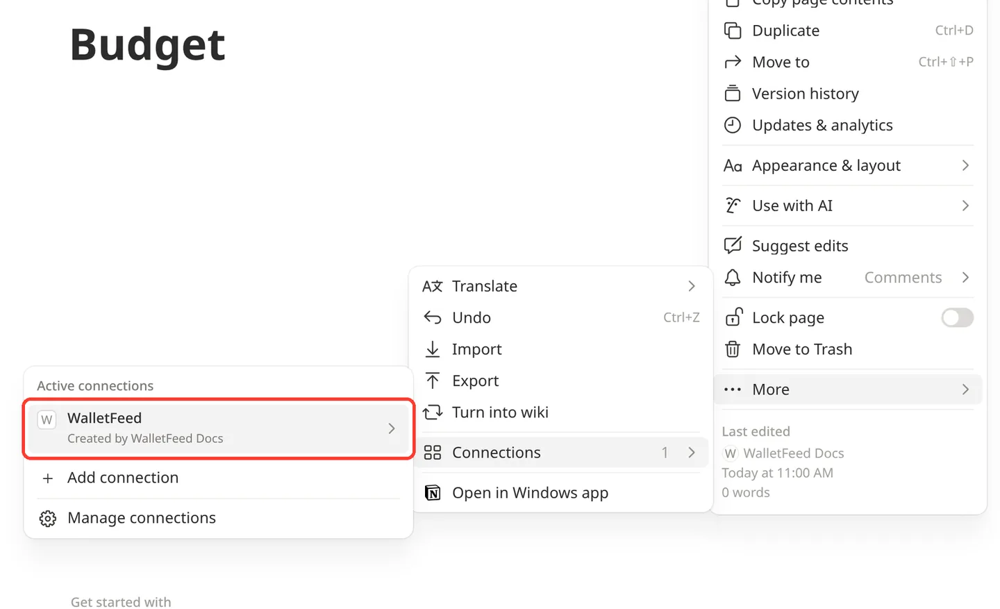
-
Click Disconnect.
After you disconnect the connection, it cannot open the page or the database. If WalletFeed has a Notion destination for this database, the destination shows "Rejected (HTTP 404)".
Delete the connection in Notion
When you delete the connection, Notion also deletes its API token.
-
On your computer, open Notion's Developer tools.
-
Click the name of your connection.
-
On the Configuration tab, scroll to Danger zone at the bottom.
-
Click Delete.
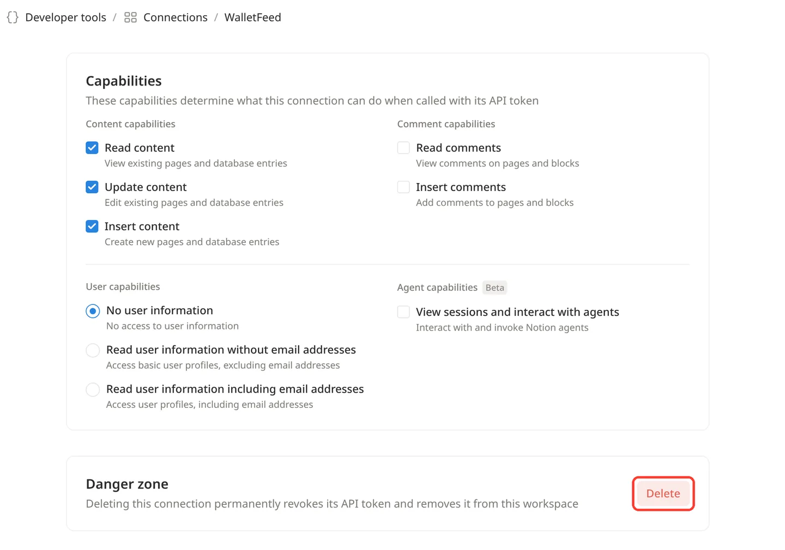
-
In Delete connection?, click Delete this connection.
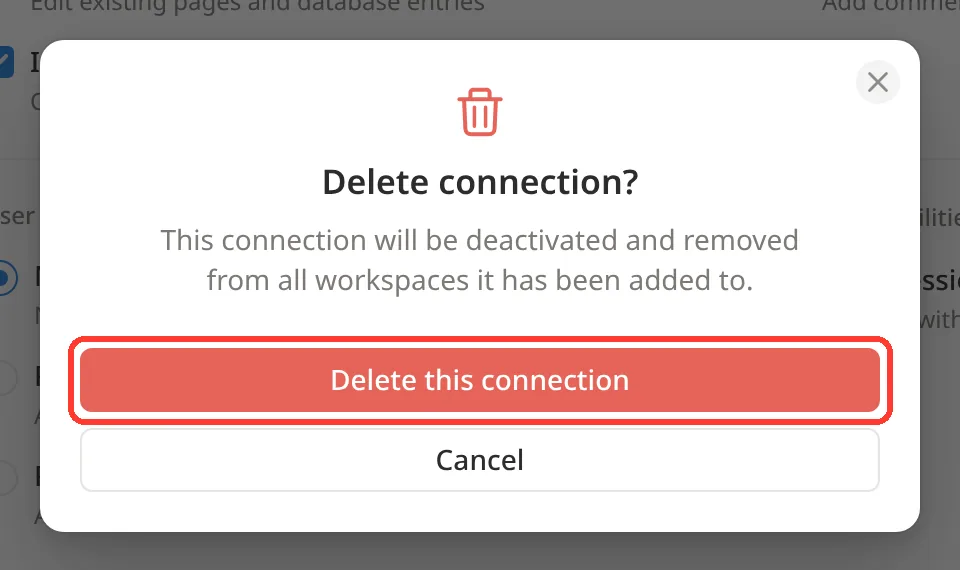
After you delete the connection, Notion does not accept its token. If WalletFeed has a Notion destination with this token, the destination shows "Authentication failed".
If there is a problem
If WalletFeed shows "Token rejected. Copy it again from the Developer portal."
Notion did not accept the token. For example, you pasted only a part of the token.
- On your iPhone, open Notion's Developer tools.
- Tap the name of your connection.
- In API token, tap Copy.
- Open WalletFeed again.
- Paste the token in Token.
If WalletFeed tells you to give the connection access to a page
The connection has no access to the page or the database. WalletFeed shows "Share a page with your connection, then try again." or "Share the page or database with your connection, then try again."
- Give the connection access to a page (refer to step 2).
- In WalletFeed, tap Try Again.
If WalletFeed shows "Give the connection read, update and insert content capabilities."
The connection does not have the three content capabilities that WalletFeed uses.
- On your iPhone, open Notion's Developer tools.
- Tap the name of your connection.
- On the Configuration tab, scroll to Capabilities.
- If Read content, Update content or Insert content has no checkmark, select it.
- Open WalletFeed again.
- Tap Try Again.
If WalletFeed shows "Notion is limiting requests. Try again in a minute."
Notion has a limit on requests, and the connection got to this limit.
- Wait for 1 minute.
- In WalletFeed, tap Try Again.
If the destination shows "Authentication failed"
Notion rejected the token. For example, a person deleted the connection, clicked Refresh API token or removed the checkmark from a content capability.
-
On your iPhone, open Notion's Developer tools.
-
Tap the name of your connection.
If you cannot find the connection, make a new connection (refer to step 1). Then give the new connection access to the page (refer to step 2).
-
In API token, tap Copy.
-
On the Configuration tab, scroll to Capabilities.
-
If Read content, Update content or Insert content has no checkmark, select it.
-
Open WalletFeed again.
-
Tap Destinations.

-
Tap the Notion destination.
-
Tap Replace Token.
-
Paste the token in Token.
-
Tap Replace.
A Notion workspace on the Free plan with more than one member has a limit of 1,000 blocks. Each row in the database is a block. After the workspace gets to this limit, Notion does not accept new rows. Then WalletFeed shows "Authentication failed".
If the destination shows "Rejected (HTTP 404)"
The connection cannot find the database. For example, a person disconnected the connection from the page.
- Give the connection access to the page again (refer to step 2).
- In WalletFeed, tap Destinations.
- Tap the Notion destination.
- Tap Send Test.
Related
Updated October 30, 2026